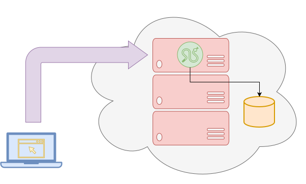

Logistics¶
REST: Overview¶
REST (representational state transfer) and is a software architecture style that defines a pattern for client and server interactions.

-
Stateless: The server won't maintain any state between requests from the client.
-
Client-server: The client and server must be decoupled from each other, allowing each to develop independently.
-
Uniform interface: The server will provide a uniform interface for accessing resources without defining their representation.
REST: HTTP Methods¶
A web application adheres to REST architecture constraints by exposing their data (ie. resources) to the outside world through an API accessible via public HTTP URLs.
| HTTP Method | Description |
|---|---|
| GET | Retrieve an existing resource. |
| POST | Create a new resource. |
| PUT | Update an existing resource. |
| PATCH | Partially update an existing resource. |
| DELETE | Delete a resource. |
REST: HTTP Status Codes¶
When performing a HTTP operation, it is important to check the HTTP status code to determine if the result of the REST API was successful:
| Code | Meaning | Description |
|---|---|---|
| 200 | OK | The requested action was successful. |
| 400 | Bad Request | The request was malformed. |
| 404 | Not Found | The requested resource was not found. |
| 405 | Method Not Allowed | The requested method was not supported. |
| 500 | Internal Server Error | Error occurred when processing the request. |
REST: Endpoints¶
To define a REST API, it is necessary to describe the HTTP methods and endpoints (ie. URL paths), along with any parameters they may take.
| HTTP Method | API Endpoint | Description | Query Data | Form Data |
|---|---|---|---|---|
| GET | /greeting | Get greeting for name |
name |
|
| POST/PUT | /greeting | Set greeting to greeting |
greeting |
Vial: Overview¶
Vial is micro-framework based on Python's built-in HTTPserver and is similar in design to flask and bottle.
from vial import Vial
App = Vial()
@App.route('/')
def hello(request):
return 'Hello, world!'
App.run()
-
Vial wraps the HTTPServer class with a custom
VialHTTPRequestHandlerthat provides utility methods for reading request data and writing responses. -
User declares a global
Appinstance of Vial. -
User maps functions to specific routes using a decorator.
Vial: Super()¶
The Vial class inherits from HTTPServer.
Therefore, it uses super during construction to call the __init__ of its
parent.
# Vial Application Class
class Vial(HTTPServer):
def __init__(self, host: str='127.0.0.1', port: int=8080, attributes=None):
# Call __init__ of HTTPServer
super().__init__((host, port), VialRequestHandler)
...
super uses the Method Resolution Order to determine which class to call next:
-
Subclasses always come before their parents.
-
The order of parents specified in the class definition is preserved (left-to-right).
Vial: setattr¶
The Vial class allows the user to specify
custom attributes which can be used in lieu of
global variables:
# Vial Application Class
class Vial(HTTPServer):
def __init__(self, host: str='127.0.0.1', port: int=8080, attributes=None):
...
if attributes: # Add attributes to object instance at run-time
for key, value in attributes.items():
setattr(self, key, value)
The setattr function adds (or updates) an attribute to the given
object instance with the given value. Similarly,
getattr can be used to read the value of a given attribute.
Vial: Cached Properties¶
The Vial class uses a custom
VialRequestHandler to process client connections.
| Cached Property | Description |
|---|---|
| url | Returns parsed URL structure from request path. |
| query_data | Returns dict of parsed query string from URL. |
| post_data | Returns read POST data payload. |
| form_data | Returns dict of parsed POST data payload (possibly JSON). |
These cached properties come from RealPython.
Vial: Writing Text¶
As discussed in lecture, most HTTP responses have the same structure: 1. HTTP status_code, 2. HTTP headers, 3. HTTP body.
def write_text(self, text: str, status_code: int=200, mimetype: str='text/plain'):
self.send_response(status_code) # HTTP Status Code
self.send_header('Content-Type', mimetype) # HTTP Headers
self.end_headers()
self.wfile.write(text.encode()) # HTTP Body
def write_error(self, status_code: int): # Lookup HTTP error status string
self.write_text(responses[status_code], status_code=status_code)
http.client.responses is a dictionary that maps HTTP status codes to their corresponding strings.
Vial: Routes (Implementation)¶
To allow different functions to handle separate endpoints, the Vial class provides a route decorator:
class VialRequestHandler(BaseHTTPRequestHandler):
# Routes dict {method: {pattern: callback}}
Routes: dict[str, dict[str, Callable]] = {}
class Vial(HTTPServer):
# Route Decorator factory
def route(self, pattern: str, methods: list[str]=['GET']):
# Route Decorator function
def decorator(callback):
# Add pattern/callback to Routes dict
for method in methods:
try:
VialRequestHandler.Routes[method].update({pattern: callback})
except KeyError:
VialRequestHandler.Routes[method] = {pattern: callback}
return callback
return decorator
Vial: Routes (Usage)¶
To map a route, we use the decorator to annotate a function:
App = Vial() # Create instance of Vial
@App.route('/')
def hello(request): # Route / to hello function
return 'Hello, World'
@App.route('/upload', methods=['PUT'])
def upload(request): # Route /upload to upload function
return {'body': request.post_data}
Unwrapping the route decorator would be equivalent to:
def hello(request):
return 'Hello, World'
def upload(request):
return {'body': request.post_data}
# App.route('/') -> returns decorator
# decorator(hello) -> registers routers and returns hello
hello = App.route('/')(hello)
# App.route('/upload', methods=['PUT']) -> returns decorator
# decorator(hello) -> registers routers and returns hello
upload = App.route('/upload', methods=['PUT'])(upload)
Vial: Method Dispatch¶
To dispatch the route callbacks, we use a
generalized do_METHOD:
def do_METHOD(self, method: str):
# Check if method is in Routes
if not method in VialRequestHandler.Routes:
return self.write_error(405)
# Loop through all callbacks for method
for pattern, callback in VialRequestHandler.Routes[method].items():
# Check if pattern matches full URL path
if matched := re.fullmatch(pattern, self.url.path):
# Execute callback and collect results
result = callback(self, *matched.groups())
# Process result based on type
match result:
case int(): return self.write_error(result)
case str(): response, *args = result, 200, 'text/plain'
case dict(): response, *args = json.dumps(result), 200, 'application/json'
case None: response, *args = '', 200, 'text/plain'
case _: response, *args = result
return self.write_text(response, *args) # type: ignore[arg-type]
return self.write_error(405)
The do_METHOD checks the result of the callback and will
call write_text with the appropriate text, status_code, and mimetype.
Vial: hello_app.py¶
Implement hello_app.py using Vial.
$ curl localhost:9999/greeting?name=Tin # Get greeting for Tin
Hello, Tin
$ curl --json '{"greeting": "Hola"}' localhost:9999/greeting # Set greeting to Hola
{"greeting": "Hola", "default_name": "Unknown"}
$ curl localhost:9999/greeting?name=Huzz # Get greeting for Huzz
Hola, Huzz
#!/usr/bin/env python3
import sys
from vial import Vial
# Constants
try:
HOST = sys.argv[1]
PORT = int(sys.argv[2])
except IndexError:
print(f'Usage: {sys.argv[0]} HOST PORT', file=sys.stderr)
sys.exit(1)
# Globals
App = Vial(HOST, PORT, {'greeting': 'Hello', 'default_name': 'Unknown'})
# Handlers
@App.route('/greeting')
def greet(request):
name = request.query_data.get('name', App.default_name)
return f'{App.greeting}, {name}!'
@App.route('/greeting', methods=['POST', 'PUT'])
def update(request):
App.greeting = request.form_data.get('greeting', App.greeting)
App.default_name = request.form_data.get('name', App.default_name)
return {'greeting': App.greeting, 'default_name': App.default_name}
# Main Execution
if __name__ == '__main__':
App.run()